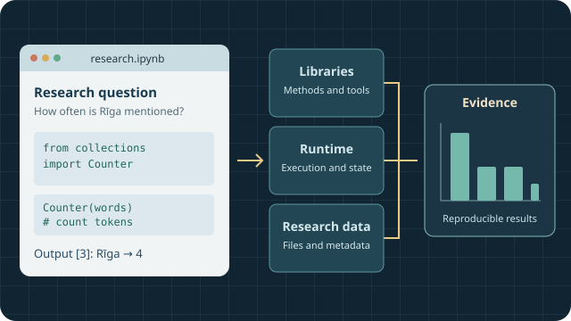

Technical week 02 · Version 1 · 25 November 2026
Notebooks and libraries
From Python code to reproducible research — master your notebook, tools and computational environment.
90-minute core · six browser laboratories · Digital Humanities

Learning objectives and materials
After Week 1, learn to distinguish notebook files from live runtimes, execute and document cells, diagnose hidden state, import and install software, read documentation, work with UTF-8 files and verify a reproducible workflow.
The new self-contained 2026 notebook is the executable companion. The historical notebook and Jupyter tips remain available; some historical examples reference files no longer present. The browser laboratories model selected behavior, not arbitrary Python execution. Use Colab or local Jupyter for real Python. No external runtime, sign-in or data collection is needed for the labs.
01 · 10 minutes
The Python ecosystem
Python is a language; CPython is its most widely used implementation. A notebook interface sends code to a kernel, a process that executes instructions and retains objects in memory. Google Colab hosts a notebook interface and remote runtime; JupyterLab and VS Code can connect to local or remote kernels. The notebook file is separate from the runtime.
Colab · JupyterLab · VS Code→Python kernel
execution and state→Libraries · memory · files
| Technology | Role |
|---|---|
| Python / CPython | Language / implementation |
| IPython | Interactive Python shell with extensions |
| Jupyter | Interactive computational notebook ecosystem |
| .ipynb | JSON-based notebook document |
| Google Colab | Hosted notebook and runtime service |
| VS Code | Editor with notebook support |
| pip | Installer of Python distributions |
| PyPI | Repository of software distributions |
| GitHub | Versioned storage and collaboration platform |
02 · 10 minutes
Anatomy of a notebook
Code cells contain instructions, Markdown cells describe research questions and methods, and outputs record results of a particular execution. Metadata describes the document and kernel. Execution counters describe execution history, not cell position. A saved notebook may contain output from an earlier session but not all the live objects needed to regenerate it.
| Markdown syntax | Purpose |
|---|---|
| # Heading | Top-level heading |
| ## Methods | Section heading |
| **important** | Emphasis |
| - item | List item |
| [Python](https://python.org) | Link |
| `Counter` | Inline code |
| ```python ... ``` | Fenced code block |
Browser laboratory · JavaScript model
Miniature notebook editor
Only headings and plain lines are rendered in this miniature Markdown model. Use real Jupyter for full Markdown. Code examples have fixed outputs.
03 · 15 minutes
Execution order and runtime state
Cells can be run in any order. Editing a cell does not update objects in memory until the cell executes. Running a downstream cell after changing upstream code can produce stale results. Restarting a kernel removes live Python objects; previously saved outputs may remain displayed. Restart and run all is a basic reproducibility test, not proof that the environment or data are identical.
Browser laboratory · JavaScript model
Notebook execution simulator
Run cell 3 first, then run all. Edit the text and rerun only cell 3. Next run cell 1 and cell 3 without cell 2. Compare the visible source, old tokens and outputs.
In [ ]Not executed
In [ ]words = text.split()Not executed
In [ ]len(words)Not executed
Runtime memory
No live objects.
Restart preserves old displayed outputs and counters in this model; the new kernel starts execution numbering again. Clearing outputs does not clear memory.
04 · 15 minutes
Modules, packages and libraries
A module is an importable unit; a package is a module with the ability to contain submodules. Library is a broader term for reusable functionality. Built-ins such as len require no explicit import; the standard library ships with Python, whereas third-party distributions are installed separately. A distribution name may differ from its import name.
| Concept | Example | Meaning |
|---|---|---|
| Built-in | len | Available without import |
| Module | math | Importable unit |
| Package | bs4 | Can contain submodules |
| Standard library | collections, pathlib | Distributed with Python |
| Third-party library | pandas, requests | Installed separately |
| Distribution | beautifulsoup4 | Install name; import bs4 |
import math
import pandas as pd # if installed
from collections import Counter
from math import sqrt as square_rootAliases bind names in your namespace; they do not rename a library on disk. A selective import binds the selected object directly. Avoid wildcard imports in research code because the origin of names is harder to trace.
Browser laboratory · JavaScript model
Import statement explorer
sqrt · pi · floor→Your namespacemathChoose a call.
Each pattern starts from a fresh namespace.
05 · 10 minutes
Installation and documentation
Installation makes a distribution available in an environment; importing binds an object to a name in the current session. Colab often has packages preinstalled, and a newly allocated runtime may differ from a previous one. Use trusted packages and document dependencies. A kernel restart may be necessary after some installations or upgrades.
Terminal versus notebook
python -m pip install requests%pip install requests # IPython magic; not ordinary Pythonimport requests
# Install beautifulsoup4, import bs4:
from bs4 import BeautifulSoupIn local environments, python -m pip selects pip for that Python executable. IPython's %pip targets the current kernel environment. Never install an unfamiliar distribution just because an error suggests a missing name.
Browser laboratory · JavaScript model
Library environment simulator
Start with standard library modules available and requests absent. No installation or network call occurs in this model.
Environment initialized.
Reading documentation
Find the function signature, required and optional arguments, return type and examples. help() shows documentation; dir() lists names, not necessarily recommended public APIs. Record relevant versions and consult documentation for the installed version.
import sys
print(sys.version)
help(str.split)
print(dir(str))Python standard library · PyPI · IPython magics
| Library | Use in the course |
|---|---|
| collections / re | Counting and text processing (Week 3) |
| pathlib / csv | Files and research data |
| json | Structured data (Week 4) |
| requests | HTTP (Weeks 4–5) |
| bs4 / selenium | Parsing and browser automation (Week 5) |
| pandas / matplotlib | Corpus analysis and plots |
| nltk / transformers | Optional NLP and sentiment methods |
06 · 10 minutes
Files, directories and storage
A relative path is interpreted from the current working directory, not necessarily the notebook's location. An absolute path starts from the filesystem root (on POSIX). Colab commonly uses /content; uploaded files and installed software may disappear when the runtime is replaced. GitHub and Drive store files independently of live runtime memory. Save important outputs to persistent storage.
from pathlib import Path
print(Path.cwd())
path = Path("data/sample.txt")
# After creating or uploading this file:
# text = path.read_text(encoding="utf-8")Specify a known encoding when reading text; UTF-8 is a good default for modern multilingual data, but historical exports may use other encodings. Do not silently ignore decoding errors.
Browser laboratory · JavaScript model
Filesystem navigator
/content/ ├── data/ │ ├── sample.txt │ └── metadata.csv ├── results/ │ └── counts.tsv └── research.ipynb
Simplified POSIX model: no symlinks, permissions or real file access. Try ../results/counts.tsv from /content/data.
07 · 15 minutes
A small Digital Humanities workflow
Research question: how often do place-name tokens occur in three synthetic Latvian documents? Preserve the input, choose a normalization rule, tokenize, count and interpret. This is whitespace tokenization, not named-entity recognition; punctuation, inflection, spelling variants and ambiguity need further treatment.
from collections import Counter
documents = [
"Rīga Jelgava Rīga",
"Liepāja Rīga Cēsis",
"Jelgava Liepāja Rīga",
]
words = []
for document in documents:
words.extend(document.lower().split())
frequencies = Counter(words)
print(frequencies.most_common())Browser laboratory · JavaScript model
Research pipeline
The browser uses Python-style whitespace splitting and JavaScript Unicode casing; rare Unicode-version differences can occur. No real historical claims can be made from these invented texts.
Interpretation
Rīga occurs four times in the default nine-token corpus. Change one spelling or disable lowercase normalization and explain why the counts change. Compare the results with the real notebook.
08 · 5 minutes
Reproducibility as a research principle
A notebook that works only for its author is not a reproducible computational procedure. Fresh execution helps detect hidden state; also preserve input data and provenance, document software versions and parameters, and explain interpretation and limitations.
| Weak practice | Better practice |
|---|---|
| Arbitrary execution | Restart and run in order |
| Unrecorded installation | Record dependencies and versions |
| Machine-specific paths | Portable paths and setup instructions |
| Overwrite source data | Preserve raw input |
| Unexplained code | Explain methodological choices |
| Only show final chart | Preserve procedure and results |
| No source information | Record provenance and limitations |
Suggested notebook structure
- Title and research question
- Data and provenance
- Environment and imports
- Data loading
- Preprocessing and parameters
- Analysis
- Results and visualization
- Interpretation and limitations
Troubleshooting reference
| Symptom | Likely cause | First action |
|---|---|---|
| NameError | Name not bound | Run required cells or imports |
| ModuleNotFoundError | Missing module or incorrect import name | Check environment and distribution |
| ImportError | Unavailable object or incompatible dependency | Check documentation and versions |
| AttributeError | Object lacks attribute | Inspect type and API |
| FileNotFoundError | Missing file or incorrect path | Check Path.cwd() and file location |
| UnicodeDecodeError | Wrong encoding | Determine source encoding |
| TypeError | Incompatible object or argument | Inspect type and signature |
| Old results | Stale memory or output | Restart and run all |
| Files disappeared | Runtime replaced | Restore persistent copies |
| Works only for author | Hidden state or missing dependencies | Try fresh environment |
Three quick debugging examples
try:
print(undefined_week02_name)
except NameError as error:
print(type(error).__name__, error)
from pathlib import Path
print(Path.cwd())
print(Path("missing.txt").exists())
print(type("Rīga"))Read the final traceback line, locate the relevant cell, inspect names and types, then fix the underlying cause. These are demonstrations, not instructions to suppress errors.
Optional bonus material
IPython magic commands
%pwd shows the working directory; %pip installs in the kernel environment; %run executes a script or supported notebook; %timeit times an expression and %%timeit times a cell. These are IPython features, not Python syntax.
%pwd
%timeit sum(range(100))Shell commands
A leading ! asks IPython to run a shell command. Commands differ across operating systems; use Python's pathlib for portable file inspection.
!lsWrite your own module
A .py file can contain reusable functions. Create it in an importable location, then import it. Imports are cached in a running process; restart after editing if needed.
from pathlib import Path
# In a fresh working directory:
Path("week02_helpers.py").write_text("def count_words(text):\n return len(text.split())\n", encoding="utf-8")
import week02_helpers
print(week02_helpers.count_words("Rīga Latvija"))Virtual environments
Separate environments prevent incompatible project dependencies. Create one locally, activate it using your operating system's instructions and select its kernel in Jupyter.
python -m venv .venvDependency specifications
Record actual third-party versions when relevant. A requirements file can specify pinned distributions; a full environment description may require Python and OS versions too.
# requirements.txt (illustrative syntax)
# requests==X.Y.Z # replace with tested versionNotebook internals
An .ipynb is JSON containing cells and metadata, not a serialized copy of Python memory. Week 4 explains JSON and serialization.
GitHub and sharing
Save a notebook to persistent storage, commit source changes, avoid secrets and large unnecessary outputs. Open the shared version and test it in a fresh environment.
Performance
Measure before optimizing. Timing varies by environment and input; use repeated trials. Compare identical work and do not confuse timing with correctness.
%timeit len('Rīga Latvija'.split())Independent practice and checklist
Open the 2026 notebook. Write a Markdown research question, load or create a small UTF-8 text, import Counter, compare two normalization settings, record the results and limitations, then restart and run all. Save the notebook and any required input/output files.
- Fix a notebook that executes a downstream cell before its import.
- Explain the difference between installing and importing a library.
- Change a file path and diagnose the resulting error.
- Demonstrate stale output and repair it by rerunning the complete workflow.
Personal learning checklist
Stored in this browser only; not assessment.
0 / 6 items marked